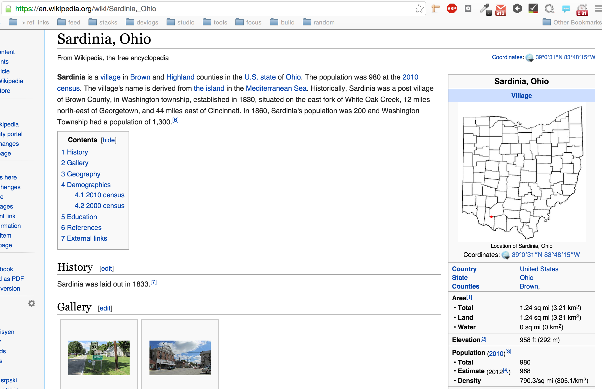
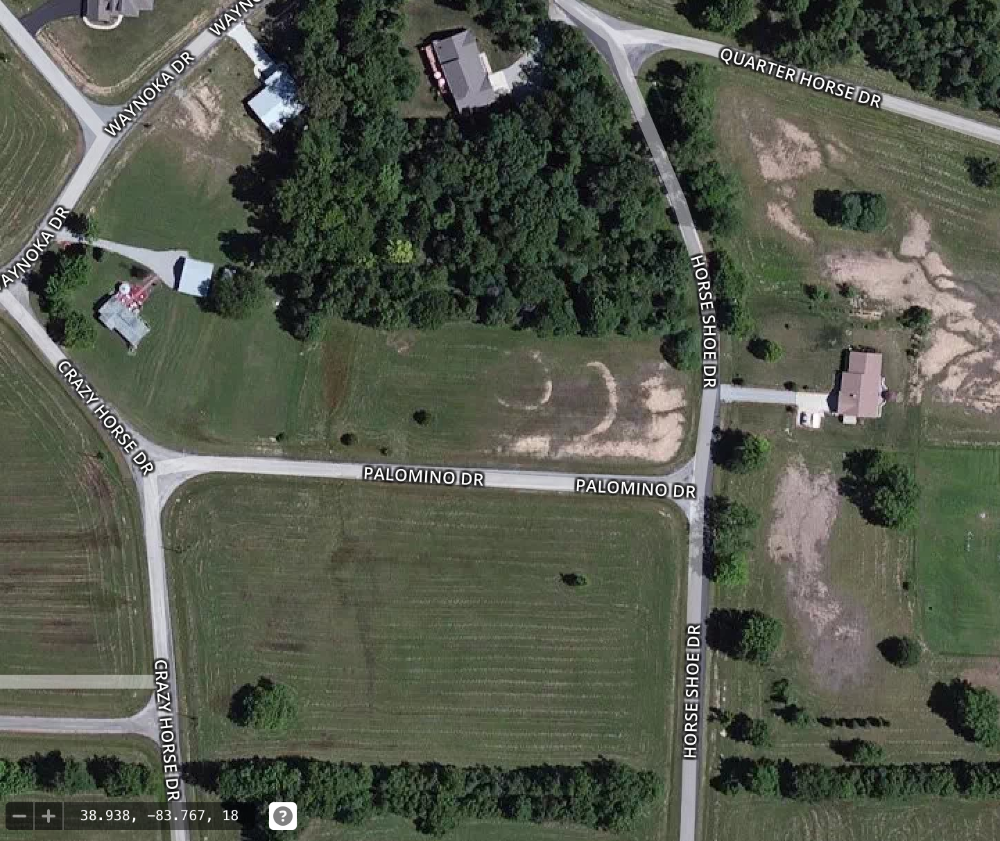
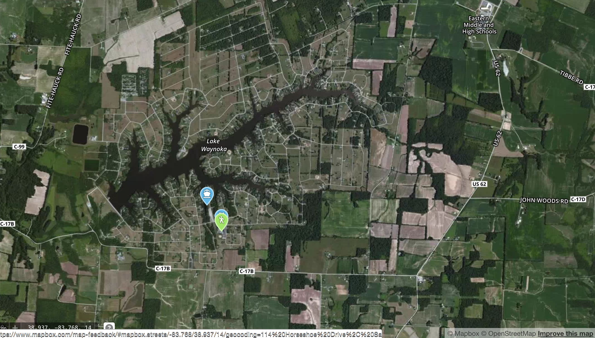
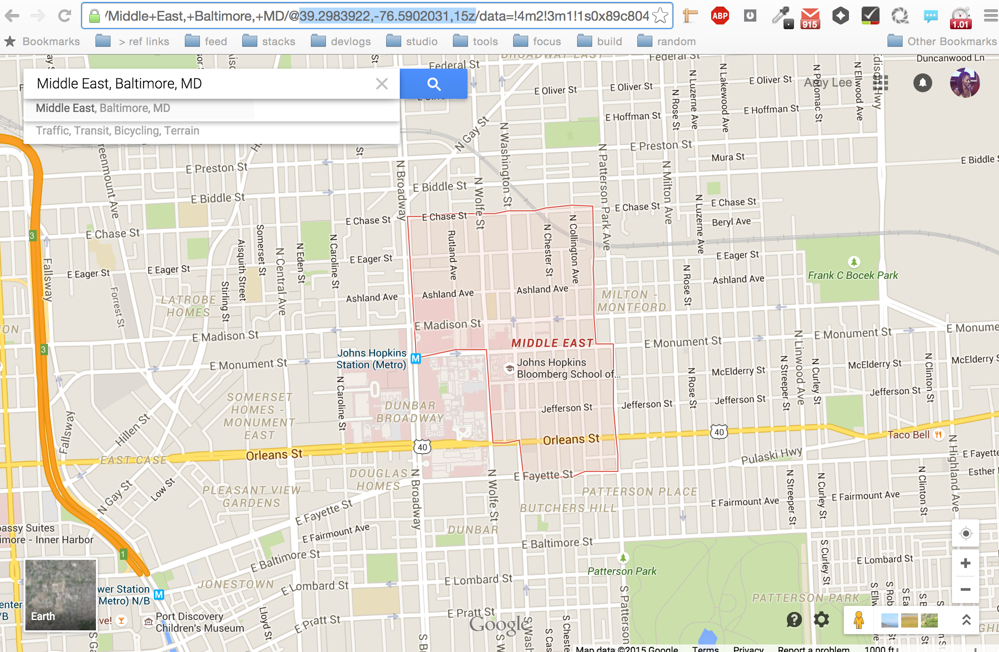
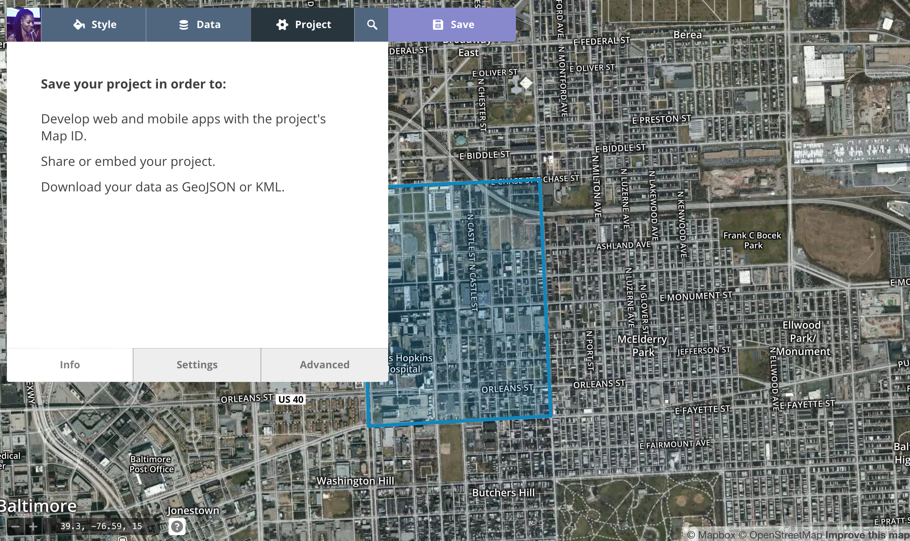
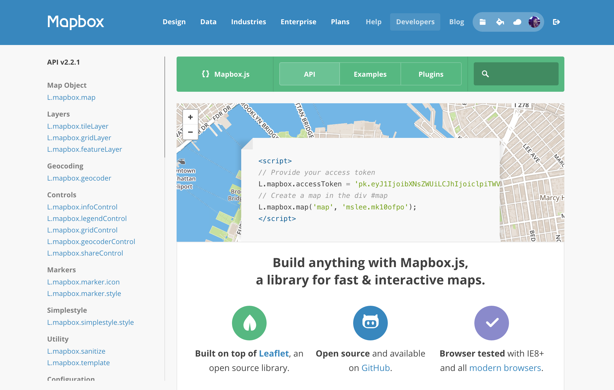
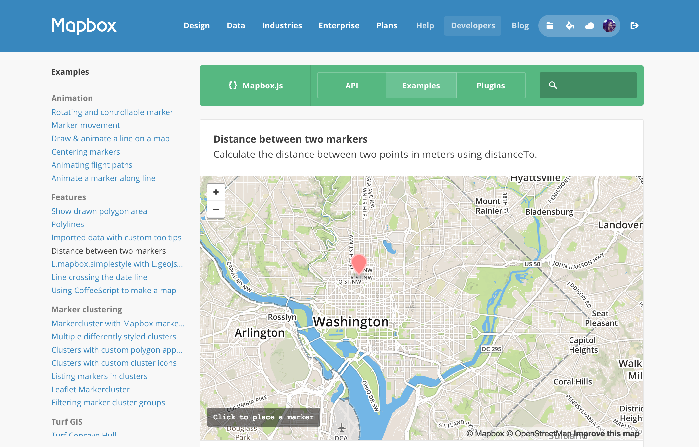

mapping your neighborhood
talk by @amyleew
designer @mapbox
 2 years ago I was in your shoes ...
2 years ago I was in your shoes ...in addition to low-tech and hi-tech version of the map
add custom data
clueless to mapping, didn't know what i was getting myself into
maps are hard
maps are everything
like a memory of photograph of place
key to any mapping project:
- know the place
- know the data
we've seen how to find data
what to do with that data...
take a step back to place
know the place?
where i'm from
 sardinia, ohio
sardinia, ohio 1hr from Cincinnati
1hr from Cincinnatismall village in Ohio
parent's house
lake waynoka
know the place:
- lat / long
- center point
- boundaries
- details
find points via google
Mapbox Editor
 determine area
determine area geojson.io save / composite
geojson.io save / compositecustom data
point, line, polygon
 download and save data
download and save dataupload to editor
use our styled basemap
host MAP on Mapbox.com
next interactivity
Mapbox.js
possiblities
 guides for everything
guides for everythingthanks.
get started @amyleew